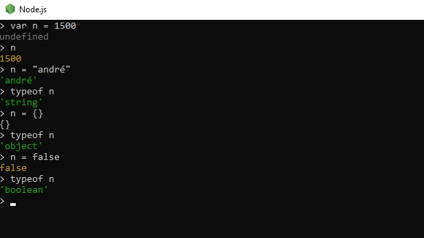
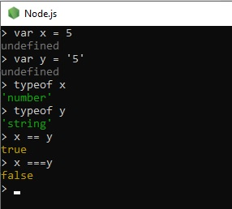

Para aprender a programar em JavaScript assim como para aprender qualquer outra linguagem, é importante ter as ferramentas instaladas no seu computador, e você pode verificar quais são elas clicando aqui, é legal buscar tutoriais, fóruns de discussão, ler livros e ler também a documentação disponível. Mas acima de tudo, o essencial é praticar. Começando pelo básico, entendendos as funcionalidades, depois começar a resolver problemas simples, e por fim, tentar criar códigos que solucionem problemas mais complexos.
Como indicação bibliográfica temos: "JavaScript - o guia definitivo", escrito por David Flanagan; e "JavaScript - guia do programador", escrito por Maurício Samy Silva. Tem disponível gratuito e online o guia de referência da e o guia de referência da , este disponível somente em inglês.
Primeiro passo para a criação de um script em JS
Nesse arquivo html, pode colocar as informações como linguagem, título, criar conteúde que será exibido, aplicar estilo, fica a seu critério. Após todo o conteúdo que estiver dentro da tag "body" mas antes do seu fechamento, abra a tag "script" (tem como incluir scripts escritos em arquivos externos, bem como fazemos com CSS, mas para esse primeiro código faremos o script incorporado dentro do código html). Nosso primeiro comando será para abrir uma janela de alerta.
linha de comando utilizada window.alert('minha primeira mensagem')
Antigamente, após cada linha de comando era obrigatório o uso de ponto e vírgula (;) atualmente seu uso é facultativo.
esse comando pode ser simplificado para alert('minha primeira mensagem') e funcionará da mesma forma.
Quando executamos esse código, primeiramenta vai aparecer a mensagem de alerta e será carregado a edição CSS, e só depois que você clicar em "ok" o conteúdo html será carregado. Caso você esteja com o navegador aberto para acompanhar as atualizações, quando adicionar um código JS não faça uma atualização simples, clique em shit + F5.
outros comandos do estilo "window":Mas para que o navegador faça algo com essas informações passada pelo usuário, é preciso que a gente crie comandos dizendo o que deve ser feito. E essas instrução são dadas através do uso de variáveis.
Um dos pontos mais importantes na hora de escrever qualquer código é saber quando inserir um comentário. No JS o comentário de linha única é feito após barras duplas (//o comentário vem aqui) e o comentário de múltiplas linhas é feito entre barra asterisco, astericos barra (/*o comentário vem aqui*/).
Como JS é uma linguagemd e tipagem fraca, quando vamos declarar uma variável, usamos o termo genérico "var", "let" ou "const". Para atribuirmos valor a uma variável tipo string ou tipo caractere, podemos utlizar aspas duplas, aspas simples ou colocar entre crases, por exemplo var x = "a" ou var x = 'a' ou então var x = `a`. Existe uma diferença entre essas três formas, mas falaremos disso mais adiante.
Lembrando que não podemos nomear as variáveis com palavras que o JS usa como comando, por isso é sempre bom verificar a lista de palavras reservadas. Além de todos os critérios de nomeção de variáveis que já discurtimos aqui. Além disso, o JS é case sensitive, ou seja, ele diferencia maiúsculas de minúsculas.
Em JS temos 3 tipos primitivos principais
Também existe os tipos: null; undefined; object - que contém um subtipo importante, o array; function.Para descobrir qual é o tipo primitivo daquela variável, existe o código de comando typeof

Mas como já foi dito, o JS é uma linguagem de tipagem fraca, ou seja, ele aceita que suas variáveis mudem de tipo dependendo do conteúdo recebido.
Outro ponto importante é a compreensão dos códigos e sinais. Em JS um único sinal de igual (=) signficiata atribuição e não igualdade. Então na estração x = 0 lemos "x recebe zero". Já o sinal de mais (+) significa concatenação, para significar soma, necessariamente os dois itens relacionados por esse símbolos precisam ser do tipo number. Por isso é necessário tomar alguns cuidados. Por exemplo, quando usamos o comando window.prompt ele retorna o valor digitado como uma string, mesmo que tenha sido colocado um número. Nesse caso, será necessário fazer uma conversão de tipos.
uma das maneiras de transformar uma string em number é pelo comando Number.parseInt(n), sendo n o nome da variável. Esse comando transforma o número em inteiro. Para conversão em um número real, o código é Number.parseFloat(n). Existe também a opção do código Number(n), que faz a conversão para o tipo adequado, seja inteiro ou real.
Para conversão de número para string, temos o código String(n) ou n.toString()
Outra coisa importante é saber concatenar uma variável a um texto, na forma tradicional temo "meu nome é " + nome, o problema é quando um texto é permeado por muitas variáveis, imagine esse caso "o aluno " + nome + " que mora na rua " + nomerua + " e que atualmente tem " + idade + " anos de idade, tirou " + nota + " na prova", seria bem complicado de escrever. Nesse caso, existe uma outra forma de sintaxe que seria `o aluno ${nome} que mora na rua ${nomedarua} e que atualmente tem ${idade} anos de idade, tirou nota ${nota}`, nesse caso é importante que a delimitação do texto seja feita com crase.
O sinal de menos (-) significa subtração; a barra simples é divisão real (/), ou seja, aquela em que o resultado é um número real, por exemplo 5/2 = 2.5; o asterísco é múltiplicação (*); o símbolo de procentagem é o resto da divisão inteira (%), por exemplo 5 % 2 = 1; e o asterisco duplo (**) é a potência, e surgiu nas últimas verões do ECMAScript
O JS segue a precedência padrão das operações aritméticas (parênteses < potência < multiplicação,divisão e resto < soma e subtração)
Temos ainda os simbólos de operadores de auto-atribuição. Contando uma variavel do tipo number de nome "n", temos:
Também temos o incremento e o decremento, que são divididos em pré-incremento ++n → n + 1 → soma feita antes da operação, pré-decremento --n → n - 1 → subtração feita antes da operação, pós-incremento n++ → n + 1 → soma feita após da operação, prós-decremento n-- → n - 1 → subtração feita após da operação
Também temos os símbolos usados como operadores relacionais, lembrando o o resultado de uma expressão relacional sempre será um valor lógico, ou booleano (verdadeiro / true ou falso / false). Os símbolos dos operadores relacionais são:
É necessário destacar que para o JavaScript, quando usamos o símbolo == ele compara apenas o conteúdo e não o tipo, com isso uma expressão 5 == '5' retorna como true (verdadeira), ou seja, ele entende que o 5 enquanto número é igual ao 5 enquanto string. Para que seja feita a comparação de conteúdo e tipo é necessário usar o ===. Nesse caso 5 ==== '5' retorna como false (falso). A mais coisas é válida para o operador de diferença, neste caso usar !==. Esse símbolos são chamados de "operadores de identidade".
Para finalizar, é importante conhecer o símbolos usados como operadores lógicos.
A precedência dos operadores lógicos é: não < e < ou
Lembrando que a ordem de precedência dos operadores é: aritiméticos < relacionais, de identidade < lógicos
A última sequência de símbolos que é importante termos em mente são os referentes ao operador ternário, que são o "?" ":" dentro de uma mesma experessão
O operador ternário substitui uma operação if-else simples. Sua estrutura é condição a ser testada ? comando caso verdadeiro : comando caso falso.
Exemplo: media >= 7 ? aprovado : reprovado
Para abrir o node.js você pode simplesmente clicar sobre o ícone dele e executar como qualquer outro aplicativo e ele abrira um prompt de comando, para fechar esse prompt basta digitar ".exit" (sem as aspas). Também é possível abrí-lo usando o VSC, clicando em Terminal < Novo terminal, ou pelo comando ctrl + shit + aspas simples. Nesse caso, o prompt será aberto acoplado no próprio VSC. Para sair, basta escrever "exit" (sem aspas).
Para limpar a tela do terminal, basta dar o comando ctrl + l.
Depois de conceituar o que são variáveis, basta unir tudo que foi aprendido até agora para começarmos a interagir com o usuário.
o códio var nome = window.prompt ('qual seu nome?') abrirá uma caixa de diálogo na parte superior do navegador, antes de carregar o código html, e haverá um espaço para que o cliente possa digitar dados, que por sua vez, ficarão salvos na variável nome
Para que o JS possa escrever na tela do node.js, o comando utilizado é o console.log em vez do document.write
Assim como na maioria das linguagens imperativas, os comandos submetidos a condições deve ser contidos dentro de blocos, representados entre chaves ({})
if (condição){
comandos
} else {
comandos
}
Por ser uma linguagem de tipagem fraca, a declaração da variável é feita de maneira genrérica. Geralmente usando o termo var ou let.A principal diferença entre var e let é que let só será acessível nos blocos de código em que foi declarada.
Quando usamos var, o JS ignora os blocos de código e converte nossa variável em global. Isso significa que se existir outra variável com o mesmo nome em nosso código, uma irá se sobrepor a outra.
Quando usamos let o JS respeita os blocos de código. Isso significa que a variável não poderá ser acessada fora depois que a chave for fechada. Nesse formato, podemos ter variáveis com o mesmo nome em diferentes blocos de código.
Atualmente há 8 Tipos Primitivos em JS. Porém, os principais são: